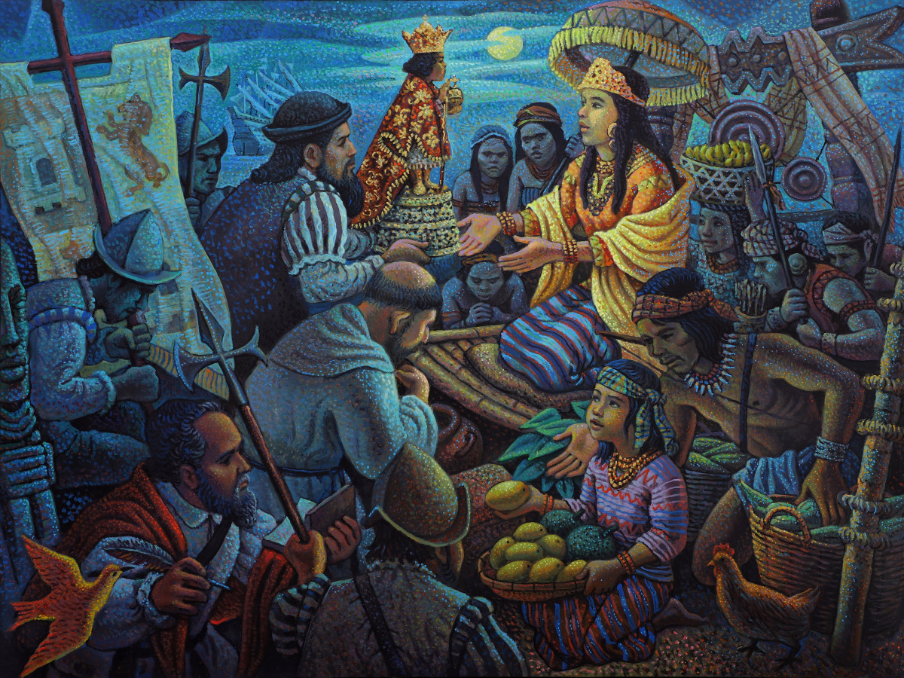

In the City's continued commitment to safeguard its rich marine biodiversity, the 3rd Underwater Clean-up Drive at the Capitancillo Islet Marine Sanctuary
Read More
Welcome to the
City of Bogo
Together, we build a brighter Bogo. Let's
unite for progress and change.
About Us
Who are we? Discover our mission and vision.

Nestled in the northern part of Cebu, Bogo City is a vibrant community dedicated to preserving its natural beauty, promoting sustainable agriculture, and protecting the rich marine ecosystem that surrounds our coastal municipality.

Announcement from the City Mayor
"This decision came easy for me tungod kay ever since nagkakuyog mi ni Gov. og trabaho adtong 2019, si Gov. Gwen has been really welcoming gyud sa akoa."
Posts
Recent Blog Posts

3rd Underwater Clean-up Drive to Protect Capitancillo
Islet Marine Sanctuary Conducted

City Continues Incentives for Seniors celebrating 80th
and 90th Natal Day
The City of Bogo continues to honor senior citizens on their milestone birthdays. The birthday honorees were greeted with warm smiles and heartfelt congratulations
Read More
Livestock Raisers Forum Highlights Insurance,
Biosecurity, and Feed Enhancers
A comprehensive Livestock Raisers Forum was hosted by the City Government of Bogo geared with the City's aim at addressing critical issues facing local livestock raisers.
Read More